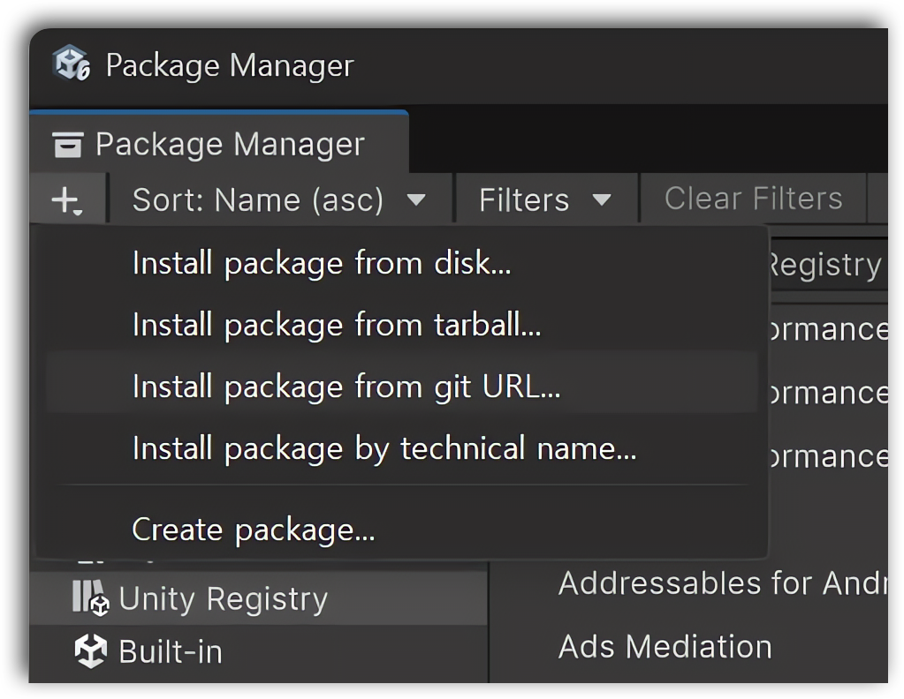
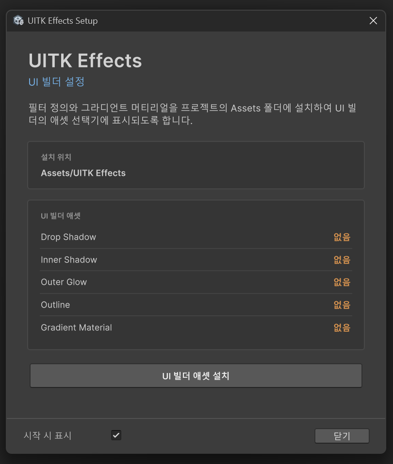

설치
패키지 설치
Unity Package Manager에서 Git 저장소 URL로 UITK Effects를 설치합니다.
- Git이 설치되어 있는지 확인하세요.
- 패키지 관리자를 엽니다.
- + 버튼을 클릭하고 Install package from git URL...을 선택합니다.
- 패키지 저장소 URL을 입력한 후 Install 버튼을 클릭합니다.
https://github.com/NK-Studio/com.nkstudio.uitk-effect.git
필터와 그라디언트 머티리얼 설치
필터 정의와 그라디언트 머티리얼은 패키지 폴더 안에 들어있어서, 프로젝트의 Assets 폴더로 복사하기 전까지는 UI Builder의 애셋 선택기에 표시되지 않습니다.
패키지를 프로젝트에 처음 임포트하면 UITK Effects Setup 창이 자동으로 열립니다.
Window > NK Studio > UITK Effects Setup에서 수동으로 열 수도 있습니다.

- Install UI Builder Assets 버튼을 클릭합니다.
- 정의와 머티리얼이
Assets/UITK Effects에 복사되고, 각 항목의 상태가 설치됨으로 바뀝니다.
설치가 끝나면 시작하기에서 사용하는 것처럼 UI Builder의 Filter 인스펙터 Definition 목록에서 DropShadowFilter, InnerShadowFilter, OuterGlowFilter, OutlineFilter, Gradient.mat을 선택할 수 있습니다.
Note
시작 시 표시를 해제하면 이후 세션에서는 창이 자동으로 열리지 않습니다. 새로 추가된 애셋이 없을 때는 Window 메뉴에서 직접 다시 열어주세요.